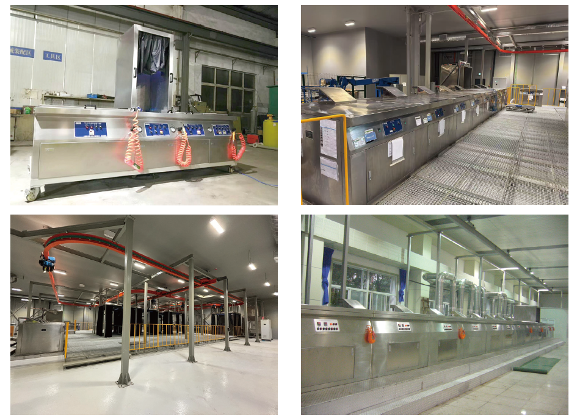

Application: Aerospace, Defense, Automotive, Medical
Cycle Time: 2–15 minutes per batch
Process:
Pre-cleaning (Ultrasonic / Alkaline)
DI Water Rinsing & Pre-drying
Penetrant Dip Spray & Dwell
Rinsing & Emulsification
Manual Touch-up
Drying & Developing
Post Cleaning & Inspection
Dimension: 0.3 m to 8 m, fully customized